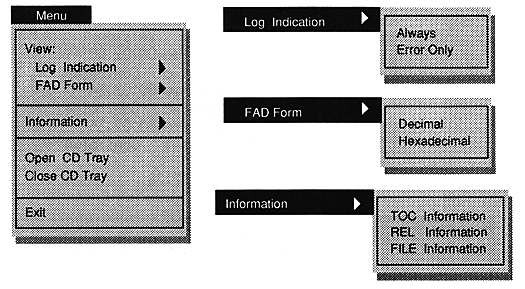

from the left
When -1, it indicates the Play state.
Always 0. It is not set on the VCD I / F board.
When -1, it indicates the Ready state.
1 if normal.
When -1, it indicates Error status.
Indicates that an error has occurred.
-1 indicates DiskEnd (Finish) status.
Always 0. It is not set on the VCD I / F board.
-1 indicates DmaEnd state.
It is used as a trigger for transfer when in playback state.
You can select "Menu" or "Help" with [LEFT] and [RIGHT] cursors. The selected part is displayed in white letters.
When you press [ENTER] or [DOWN] on the cursor, the contents of the selected menu will appear.
